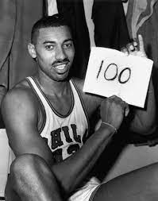
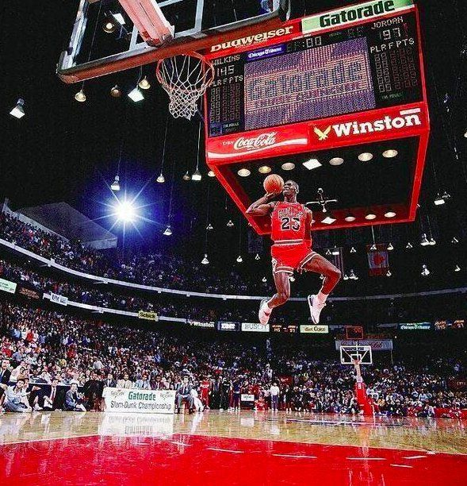

El batio este record el 8 de febrero de 2023 superando a el famoso Kareem Abdul-Jabbar.

este record fue hecho por Wilt Chamberlain en 1962
Este record pertenece a Michael Jordan, el tenia una vertical altisima era de 121,92 cm tambien podia con gran facilidad hacer los mismos mates sobre sus oponentes el era nombrado como el G.O.A.T(el mejor) tambien gano 2 concursos de mates consecutivamente
